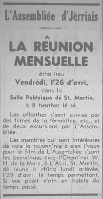

L'Assembliée d'Jèrriais
Eune séthée d'films
 Au mains chent dgiex membres lus rêunitent dans la Salle Publyique dé St. Martin pour la rêunion mensuelle, vendrédi, lé 26 d'avri.
Au mains chent dgiex membres lus rêunitent dans la Salle Publyique dé St. Martin pour la rêunion mensuelle, vendrédi, lé 26 d'avri.
L's affaithes
Lé rapport des superstitions et crianches au mais d'mars fut liu et accepté. Deux danmes fûtent êlues comme membres et deux rêponses ès lettres env'yées fûtent liues.
Lé Président annoncit qu'y'avait acouo des pliaiches pour l'excursion à Lamballe l'22 d'août.
Lé restant d'la séthée fut bein întérêssant. D'vant c'menchi, Mme. Le Sueur dit qué les films qué l'Sieur G. Le Masurier s'n allait montrer 'taient d'difféthents travaux d'ferme, carosse à quatre chevaux, des excursions et l'"show" à Springfield.
Un court film à c'menchi prîns par lé Sieur Le Masurier au "show" à Springfield - deux vainnées d'monde en habits du temps pâssé, eune vainne au Sieur L. Pipon et l'autre au Sieur L. Richard.

L'avoût
I'y eut tout-à-fait un r'change quand nou-s-allit vaie les hommes à scier l'avoût dans un bieau betchet d'aveine au Sieur Pipon - la machinne à deux ch'vaux et deux hommes, iun à la cachi et l'aut' à gav'ler: à faithe les gerbes auve un gav'leux et du monde alentou du clios à dgerber; pus tard nou les vit à chèrgi pour aller à la machinne à battre et auprès à la machinne à battre même. Tchi difféthence quand nou les vit à la nouvelle manièthe, auve eune machinne qui fait tout dans eune fais, scier, dgerber et battre!
Siez l'Sieur W. Robert pour vaie les femmes à traithe à la mains, et i' n'li pathaissaient pas trop mal. Pus tard i' fîtent lé beurre dans eune selle carrée et auprès l'pêtri à la tchullyi et l'mettre sus un mertcheux du temps pâssé pour être mins sus eune fielle dé chour. I' faithait vraiement envie arrangi dans l'grand pangnyi.
Un vier fricot du temps pâssé, dé tchi qu'nou n'ouait pas pâler fort à ch't heu - du lait êputhé. La Dlle. C. de Gruchy montrit à en faithe sus d'la mousseline et d's ailes dé feûgiéthe.
Cârosse à quatre chevaux
Lé film c'menchit auve la carôsse à quatre chevaux l'long d'la Route dé St. Louothains d'la ferme au Sieur L. Pipon jusqu'au Carrefour Selous, touos les pâssagièrs pathaissant bein dans lus vièrs habits du temps pâssé. D'ichîn nous allit au Vau d'la Mathe siez l'Sieur J. A'court vaie ses tchians à mettre toutes les vacques ensemblye pour les r'entrer pour traithe. Acouo au moderne siez l'Sieur J. Gibaut, Beau Vallon, pour les vaie traithe à la machinne.
D'ichin à Flicquet, siez l'Sieur Garnet Perchard, [à plianter des] patates dans les côtils à la tchéthue qu'est [traînée amont par eune manivelle] et un coupl'ye d'rangs auve eune grand' bêque.
Auprès siez l'Chent'nyi d'la Haye à St. Brélade en pliain clios à la tchéthue et ch'va, et sus la même ferme tout-à-fait modèrne à d'pichi les trons d'brécolis auve un "rotovateur".
À travers la mé en Dgèrnésy eune excursion par L'Assembliée y'a deux ans et, pus au liain, l'excursion à Southampton l'année pâssé, et en Dgèrnésy lé mais d'novembre lé Conmité Dramatique donnit un concert. Ches films d's excursions 'taient prins par Mme.
E. Le Sueur.
Ermèrciêments
Lé Président èrmèrcyit l'Conmité Dramatique et l'Sieur George Le Masurier pour aver montré les films et dit qué l'Connêtabl'ye T.G. Billot aver r'gret dé n'être pas là et d'mandit au Chent'nyi Le Masurier dé lî faithe des r'mèrciêments.
Lé Président annoncit qu'la préchaine rêunion mensuelle étha lieu à 7 heuthes et d'mie au Fort Régent, vendrédi, l'31 dé mai, et auprès à la Salle d'Agricultuthe, où'est qu'lé Député A.C. Quérée don'na un discours.
1968
Viyiz étout: